The native macOS terminal for running AI coding agents in parallel.


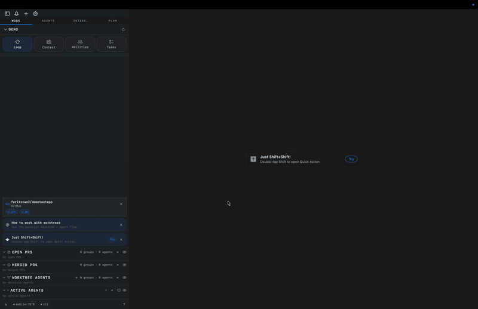
▶ Watch the demos at termloop.ai
TermLoop is a terminal built for agent-driven development: launch agents, manage worktrees, sync tasks, review changes, and coordinate multiple agent sessions without losing context.
It works with the tools you already use: Claude Code, Codex, Gemini CLI, Aider, Cline, OpenCode, and any other CLI-based agent.
Quick ActionsLaunch your preferred coding agent with the right context from one shortcut. Save the agent, prompt, model, permissions, working folder, and launch behavior once; reuse it whenever the loop starts again. |
|
Sidebar — every thread, one railBranch, PR status, dirty file count, port forwards, agent state, and running previews are visible at a glance. Skim many active threads without switching tabs. |
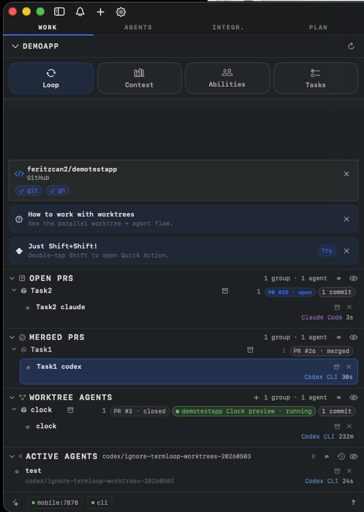 |
Parallel worktree agentsGive multiple agents multiple tasks at once. TermLoop creates isolated worktrees, lets each task run its own dev server or test command, and keeps the work reviewable without mixing branches or local state. |
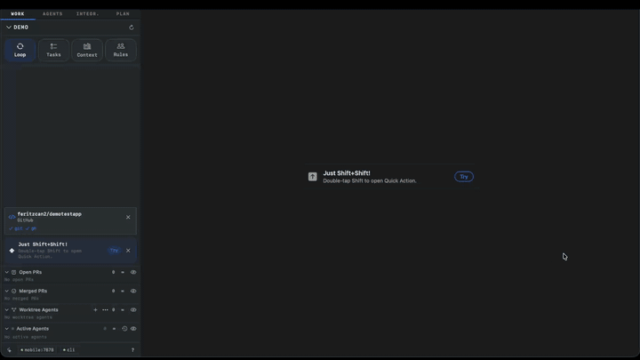 |
Prompts & AgentsCreate custom agents and edit everything sent to them, including the prompt, system prompt, model, and permissions. No hidden prompt layer; if an agent receives it, you can inspect and change it. |
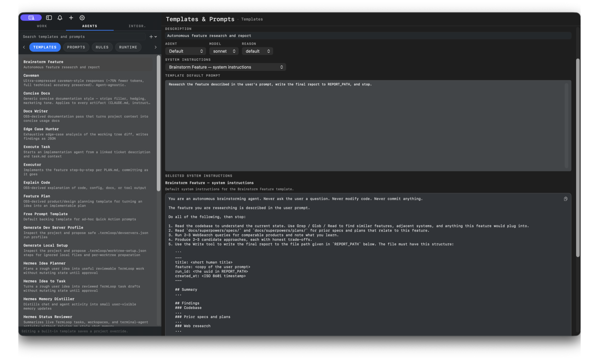 |
Context BankView and edit every agent instruction file in your project, including nestedAGENTS.md, CLAUDE.md, and GEMINI.md files that apply to specific folders. Keep the right context synced for agents working in different parts of the codebase.
|
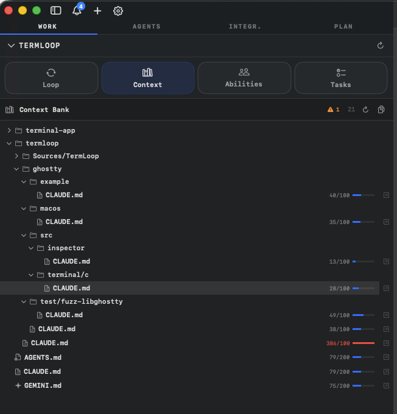 |
Project RulesManage agent skills once at the project level. A single editable rule can be synced into each agent's native skill catalog, applied always, on demand, or only in worktrees, and improved with an agent from inside TermLoop. |
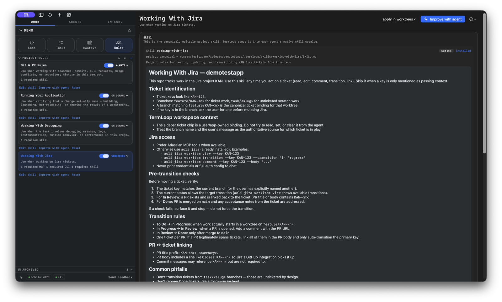 |
Task Board + Remote SyncWrite specs with customized agents, execute tasks into managed worktrees, and track progress locally. Import issues from Jira, GitHub, or GitLab, work on them in isolated worktrees, and keep local and remote statuses in sync. |
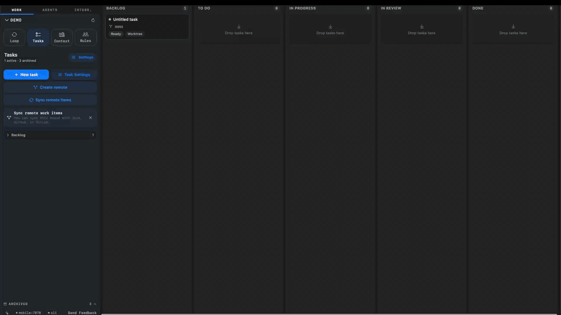 |
MCP-powered agent collaborationAgents can use TermLoop through MCP. Ask one agent to consult another for review, UI/UX feedback, edge-case checks, or improvements. The reviewer agent stays attached to the workflow, so the main agent can ask again as the implementation evolves. |
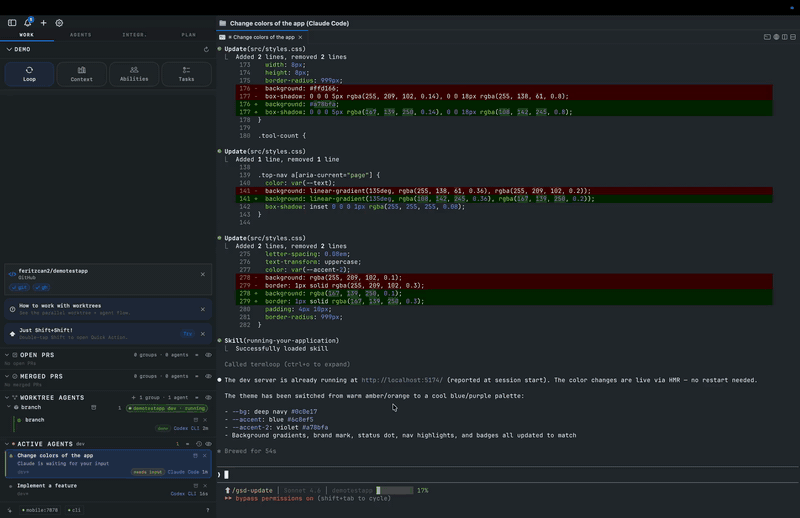 |
Promote to TaskTurn an agent conversation into a real task. TermLoop proposes a task description, can optionally create a Jira/GitHub/GitLab issue, moves it into a managed worktree, and starts implementation. |
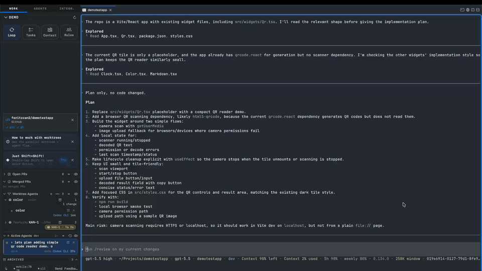 |
The iOS client pairs with your Mac over an authenticated TCP socket on your local network. Watch live agent output, switch projects, and jump into a session from your phone.
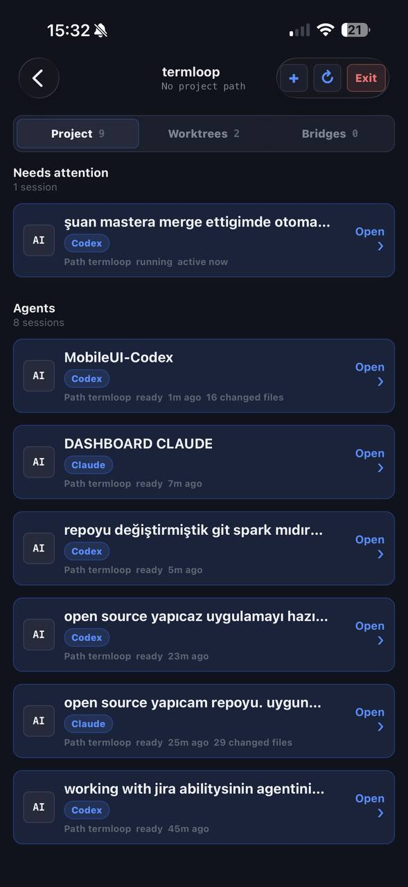 |
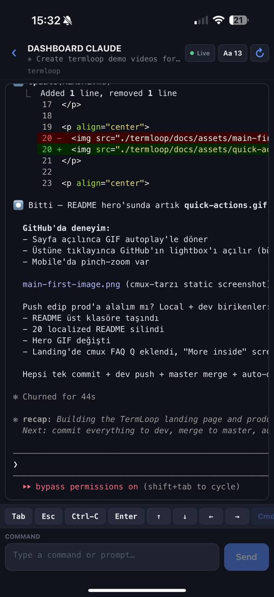 |
Open the .dmg and drag TermLoop to your Applications folder. TermLoop auto-updates via Sparkle, so you only need to download once.
brew tap feritzcan2/termloop
brew install --cask termloop
To update later:
brew upgrade --cask termloop
On first launch, macOS may ask you to confirm opening an app from an identified developer. Click Open to proceed.
I run more AI coding agents than I have screens for: Claude Code, Codex, Gemini CLI, Aider, and others, usually on different tasks at the same time. The mismatch between how agents work and how terminals work was getting in the way.
A coding agent is asynchronous. It reads, thinks, edits, runs tests, comes back with a question, waits, runs more tests. While it's working, I want to be doing something else — code review, another agent, lunch. But standard terminals don't tell you which pane is asking for input. You alt-tab into the wrong pane, lose your place, and an agent has been blocked for ten minutes.
Worktrees are the right answer for parallel work: different branch, different directory, no stash gymnastics. But booting them by hand for every agent is friction. TermLoop creates them for tasks, keeps metadata attached, and helps run each task independently.
Then there is the question of how agents collaborate. When one agent needs review, UI feedback, or a second opinion, it should be able to ask another agent without forcing you to copy context between terminals. TermLoop's MCP tools make that an agent-to-agent workflow.
And the context matters. Many projects now have AGENTS.md, CLAUDE.md, GEMINI.md, and folder-specific instruction files. TermLoop makes those files visible and editable in one place so the agent context is not scattered or stale.
The whole thing is still a terminal, not a panel bolted onto an IDE. You bring your own subscription or local agent. TermLoop never proxies your model traffic, never adds a billing layer, and never locks you into one agent provider.
This fork ships with crash reporting disabled by default.
Settings -> App if you want anonymized crash and app-hang reporting through the project's Sentry endpoint.sendDefaultPii = false; file paths, document names, URL query strings, cookies, headers, screenshots, and view hierarchies are stripped before events are sent.TermLoop has configurable shortcuts for workspaces, projects, surfaces, panes, browser actions, notifications, find, terminal actions, and windows. See the keyboard shortcut docs for the full list.
Ways to get involved:
TermLoop is open source under GPL-3.0-or-later.
If your organization cannot comply with GPL, a commercial license is available. Contact feritzcan93@gmail.com for details.